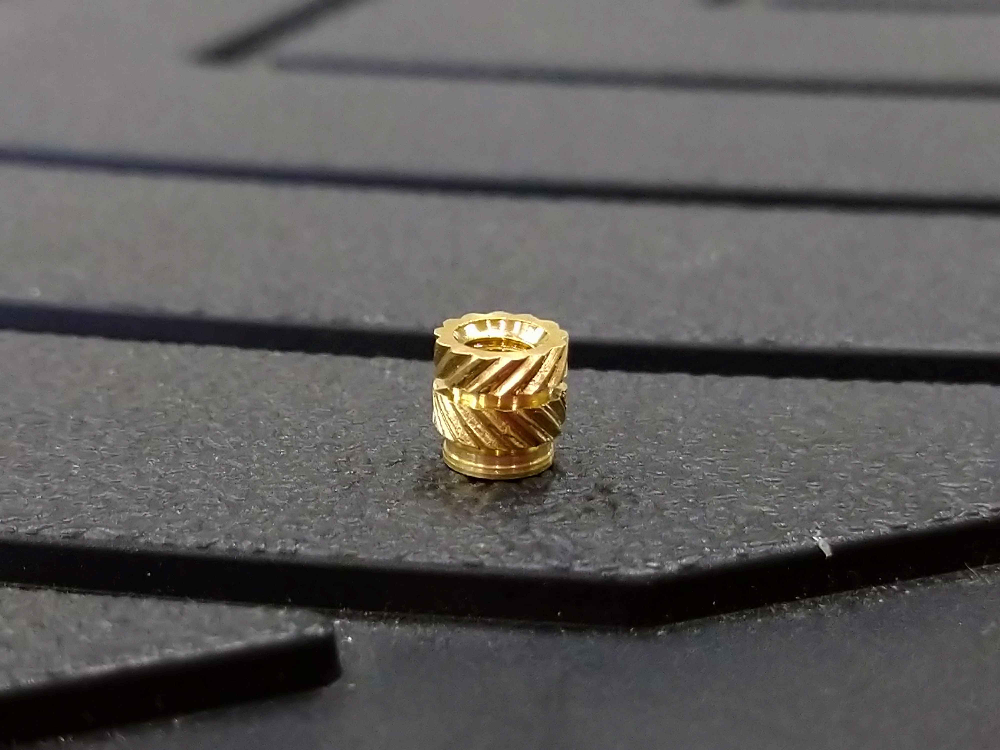
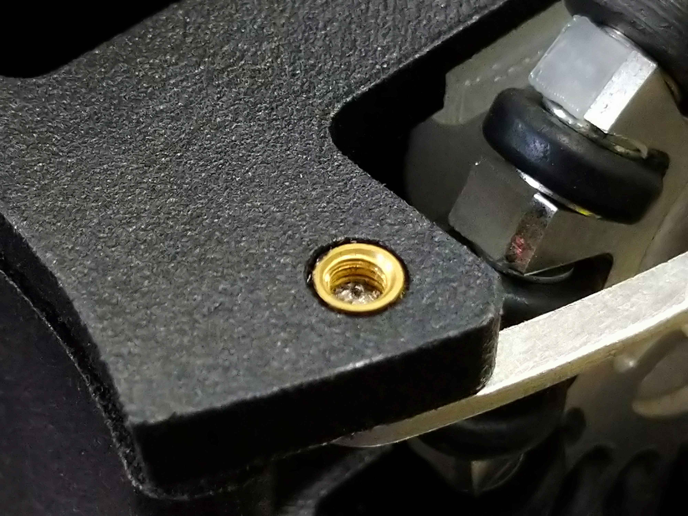
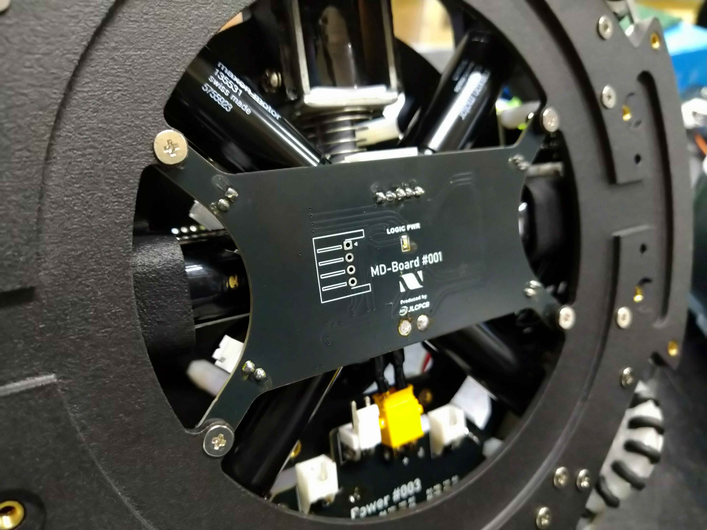
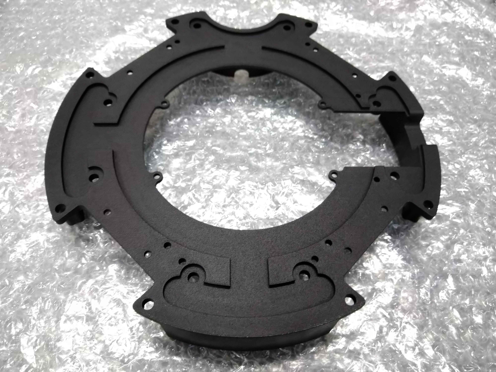
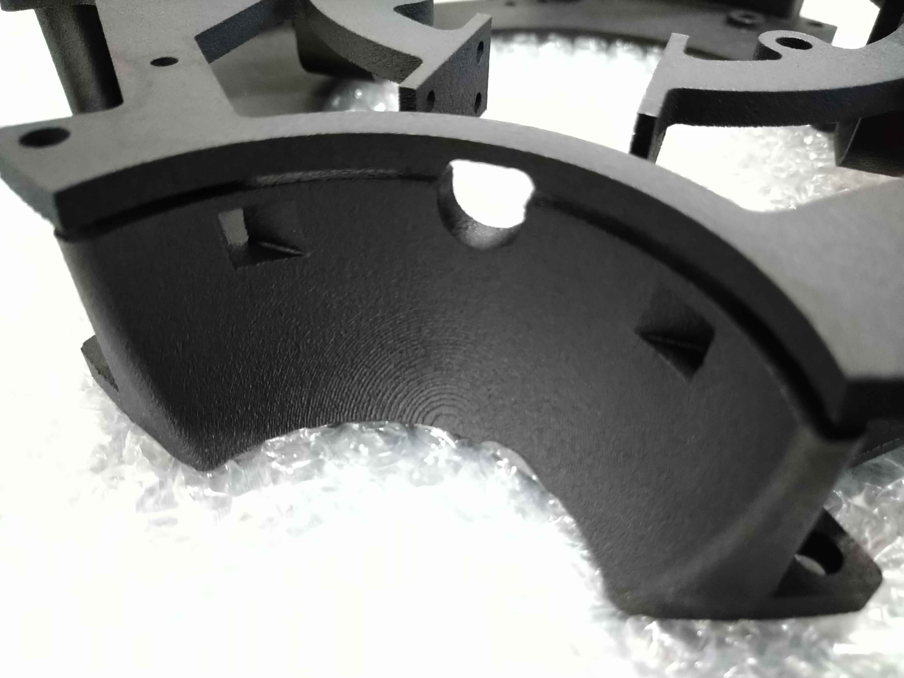
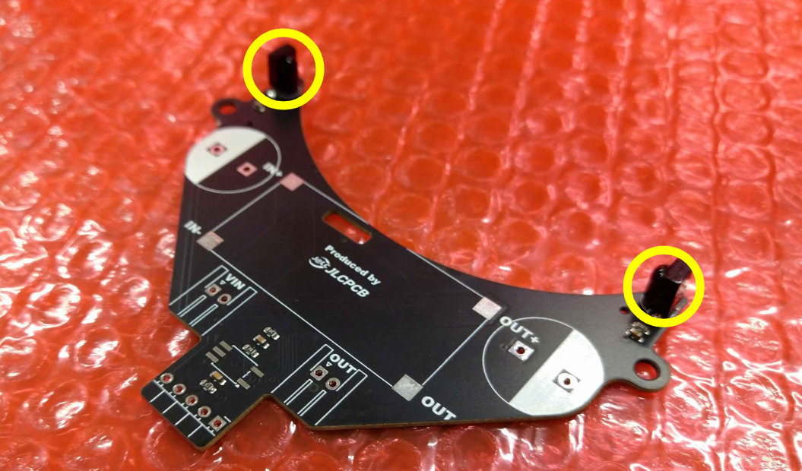
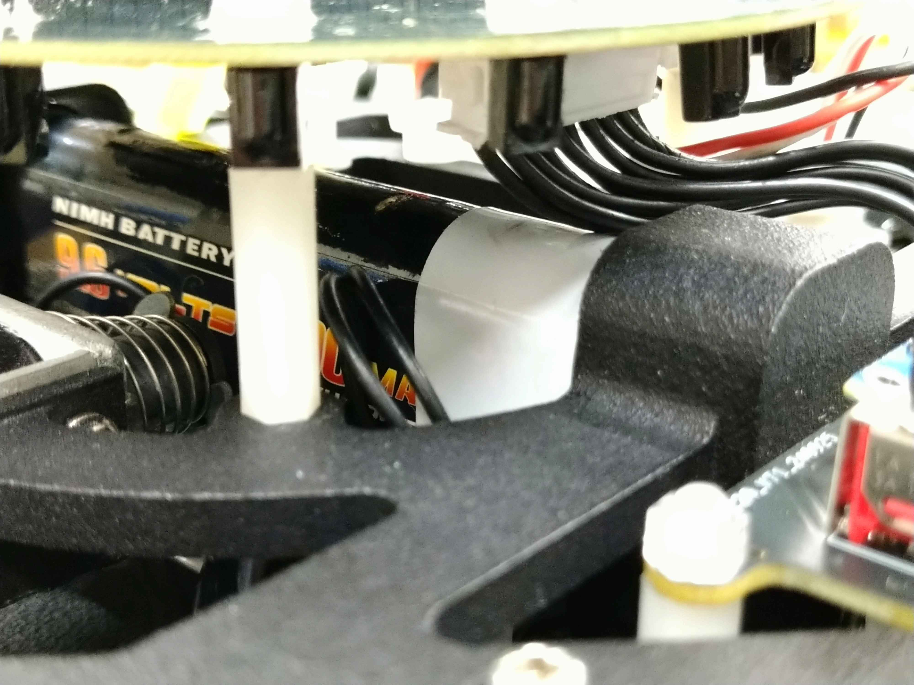
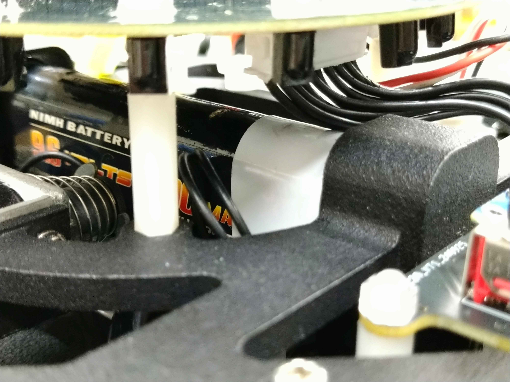

TOINIOT² Blog
ボディ-2-
2024-11-10 Writer: 010
こんにちは。今回は4か月半ぶりに機体のボディを3Dプリントで頼ませていただきました。
3DプリントをJLCPCB様に頼ませていただくメリットやボディの全体的な説明は以前こちらでしたので、今回は僕たちがこのボディを設計する上で工夫したことなどを細かく話していきたいと思います。
と、その前にまずはいつもお世話になっているJLCPCB様の紹介から。
JLCPCBは主に基板製作を手掛けている会社です。しかし、それだけではなく、今回のような3DプリントやCNC加工なども行っており、彼らに作れないものはない！と言っても過言ではありません。
そして、JLCPCB最大の特徴は「安い」「早い」「正確」の3拍子がそろっていること。
商品自体は1$から発注可能、工場は海外にあるのに、空輸とはいえ発注から2週間かからずでの到着はかなり魅力的です。
しかもこの2週間とはあくまでも通常配達での話。速達サービスを使えば数日で届きます。1週間もかかりません。ここでもう一度言っておきます。
出荷元は海外です！日本ではありません‼凄すぎ…
もちろん、確立された機械生産によって不良品に当たる可能性はほとんどなく、少なくても僕たちは一度も遭遇していません(僕たちの設計ミスはたくさんありましたが(笑))。
あとそうそう、オペレーターの方がメールで注文内容について応対してくれるのも推しポイント!!
以前僕たちが頼ませていただいた基板の中に構造上貧弱になっている箇所があったのですが、このままでは危ないこと、解決策などを提案していただき事なきを得ました。 しかも全部無料で…!(*'▽')
今ならクーポンもゲットできるみたいです。 この機会をお見逃しなく！！

↓JLCPCB様のHP
https://jlcpcb.jp/
↓クーポンゲットのチャンス！
・新規ユーザー$60クーポン
https://jlcpcb.com/JPV
・その他のクーポン
https://jlcpcb.jp/coupon-center?from=6layer
さて、それでは本題に。
1. 圧倒的ナットレス

普通ねじはナットを使用して固定しますが、何回も取り外しをする場合、ナットがロボットの内部に入り込んでしまうことがあります。
それだけではなく、ナットが床に落ちてそのままどこかへいってしまうことも…。試合中の修理など時間がシビアなときには本当にストレスですし、何より時間のロスが発生してしまいます。
また、それ以外にもねじの長さが微妙に足りずにより長いものを使う羽目になったりと、とにかく問題点が多い…!!そこで考えたのが「インサートナット」を使うこと。
いやナットやんって話ですが、少々特殊な代物で、これは言わば取り外しができないナット。
写真のような金属の部品を熱を利用してボディに埋め込むと、内部がねじ巻き状になっているのでナットの役割を果たしてくれます。
これだとナットがなくなったり、微妙な突起で車検に引っかかるようなこともゼロに!そして、これは従来のようなアルミ板を切り出した床板だとできません。
また、市販の3Dプリンタでもここまで大がかりなものを作るのは難しいので、JLCPCB様々。

2. 完全分離
基本的にロボットのボディは1段目と2段目に分けることができます。
もちろんそれぞれにいろいろな部品がつくと思うのですが、なかにはそれらをまたぐちょい面倒なものも存在し、特にIOT²が頭を悩ましていたのが、2段目につきがちなモータードライバーと1段目につけるしかないモーターの扱い。
ロボットを修理しようと分解すると、そのたびにモーターの線を外さなければならず、しかも試合中には外れないようそこそこ固くしてあるので毎回苦労のオンパレードでした。
過去には力を入れすぎて断線が起きたこともあり…(モーターのプラグごと逝ったときは地獄だったな〜)。とにかくモータードライバーを1段目に移すことが求められていました。
それが今回、ライトウェイト4年目にしてついに実現したのです。
自作のモータードライバーとその機体のためだけに作られた専用のボディ、いずれも徹底的に省スペースで作られた2つを組み合わせることで、モーターとモーターの間に僅かながら基板を入れる隙間を生むことに成功しました。
ちなみにこれ以外に一切1,2段目をまたぐ部品がないのかと言われるとそういうわけではないのですが、せいぜいラインセンサとメイン基板を繋ぐフレキシブル基板(取り外しは超簡単)ぐらいなのでまあ問題ないでしょう。

3. 1段目よりも下にあるラインセンサ

ラインセンサはロボットの構造物の中で最も下にあり、なおかつサイズが一番大きい基板です。
何か不具合などが生じて取り外しが必要になると、ロボットを全解体する勢いでモーターやら何やらを取らなければなりません。
時間がかかるのはもちろん、上で話したようにモーターが断線する可能性も高まります。一番下にあるのであれば、ロボットの底側から外せるようにすればいいのでは…。
おそらく誰もが一度は考えたことでしょう。しかし、基板が出っ張ることのないように1段目の床板の上側に取り付けざるを負えず、また、IOT²の場合省スペースを実現するためいくつかの基板の穴を共用していたので気合ですり抜けさせるという荒業も使えませんでした。
ですがこれはあくまでも床板が平面だったときの話にすぎません。僕たちは床板が立体であることを生かし、1段目を2層構造に。
ご覧の通り、底面にくぼみをつけて、基板もすっぽりです。もちろんねじ穴もラインセンサ専用で、前述のインサートナットつきなので、僅か数十秒ほどで容易に基板をロボットから完全に切り離すことができるのです。
ちなみに、モータードライバーを1段目に置けたのは、このラインセンサを移動させられたのが一番大きい理由だったりもします。
4. ボールを包み込む曲線を描いたくぼみ

今まではボールをホールドするロボット前方のくぼみは写真のような台形型でした。
しかしこれだとロボットとボールの間に隙間ができてしまうため、走行中にボールがぶれたり、キッカーの力が伝わりにくくなってしまいます。
くぼみをより小さくすればぶれはましになりますが、その場合より正確な動き、プログラムが求められるので一長一短でしょう。
それらを解決するべく、ボールの形に沿った立体的なくぼみにした次第です。これもアルミ板だとなかなか難しいので、JLCPCB様の3Dプリントサービスがあってこそ実現したものだと思います。
あっ、それと穴が3つ空いていると思いますが、真ん中はソレノイドがキーーック!!するところ、左右はいつキーーック!!するかを判断するボールセンサ用のものです。
5. ボディと一体化したバッテリーケース
ロボットにとってバッテリー、電源は「かなめ」である一方、ショートなどの重大なトラブルを起こす引き金になりかねません。
そのようなことを引き起こさないためにも、バッテリーの扱いには細心の注意が必要ですが、ロボットにしっかりと固定するというのは基本中の基本でありながらも極めて重要なことです。
以前は別パーツだったバッテリーケースをボディに一体化することで、ねじのゆるみなどが絶対に起きないようにしました。
また、別で作ったストッパーを使い、二重に外部からの衝撃や揺れへの対策も行っています。
 

今回は以上です。上記のポイントはいずれもJLCPCB様の3Dプリントサービスがあったからこそ実現できたもの。JLCPCB様、そしてこの記事を読んでくださった皆様、本当にありがとうございました。
バイバイ!(*´∇`*)